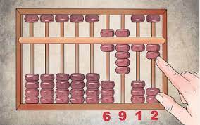
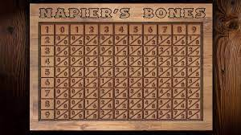
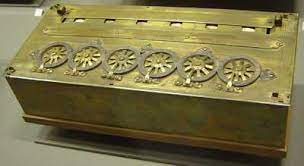
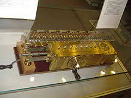
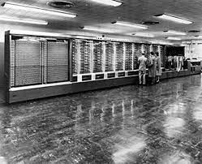
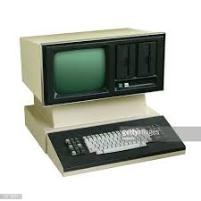
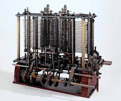
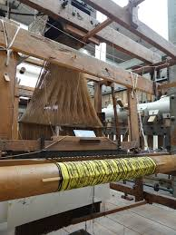

Abacus 3000(BC)
The word Abacus derived from the Greek word ‘abax’ which means ‘tabular form’. It was said to be invented from ancient Babylon in between 300 to 500 bc.
Abacus was the first counting machine.
Earlier it was fingers, stones, or any various kinds of natural material.
It was widely in use in different countries from the Middle East to Japan, China, Russia as well as Europe.
When the Hindu number system introduced zero and also the Arbi number system came into use, the use of the abacus diminished and it became limited to counting
the Place value of numbers only.
he binary abacus is used to explain how computers manipulate numbers. The abacus shows how numbers, letters, and signs can be stored in a binary system on a computer, or via ASCII.
Napier Bones(1617)
Napier’s Bones was one of several methods John Napier invented to simplify calculating large numbers. Napier’s Bones and other calculating techniques were published in 1617 in a book titled Rabdologiae, or speaking rods, shortly before Napier’s death. Napier’s Bones were in use for hundreds of years, until mechanical calculators were invented.
Napier's bones, also called Napier's rods, are numbered rods which can be used to perform multiplication of any number by a number 2-9.Napier's bones is a manually-operated calculating device created by John Napier of Merchiston, Scotland for the calculation of products.


Pascaline(1642)
Pascaline, also called Arithmetic Machine, the first calculator or adding machine to be produced in any quantity and
actually used. The Pascaline was designed and built by the French mathematician-philosopher Blaise Pascal between
1642 and 1644.
It could only do addition and subtraction, with numbers being entered by manipulating its dials.
Pascal
invented the machine for his father, a tax collector, so it was the first business machine too (if one does not count the
abacus). He built 50 of them over the next 10 years.
Pascaline, also called Arithmetic Machine, the first calculator or adding machine to be produced in any quantity and actually used.
Leibniz Wheel(1685)
The stepped reckoner, also known as Leibniz calculator, was a mechanical calculator invented by the German mathematician Gottfried Wilhelm Leibniz around 1672 and completed in 1694.
The name comes from the translation of the German term for its operating mechanism, Staffelwalze, meaning "stepped drum".
It is also known as the Leibniz wheel or stepped reckoner. It is the type of machine which is used for calculating the engine of a class of mechanical calculators. The Leibniz calculator is also called a Leibniz wheel or stepped drum.


Mark1(1944)
A programmable, electromechanical calculator designed by Professor Howard Aiken. Built by IBM and installed at Harvard in 1944, the Mark I's 765,000 parts were used to string 78 adding machines together. It used paper tape for input and typewriters for output. According to Rear Admiral Grace Hopper, the Mark I sounded like a thousand knitting needles.
The machine, like Babbage's, was huge: more than 50 feet (15 metres) long, weighing five tons, and consisting of about 750,000 separate parts, it was mostly mechanical.
From 1939 to 1944 Aiken, in collaboration with IBM, developed his first fully functional computer, known as the Harvard Mark I.
Census Machine(1889)
Invented by Herman Hollerith, the machine was developed to help process data for the 1890 U.S. Census. Later models were widely used for business applications such as accounting and inventory control. It spawned a class of machines, known as unit record equipment, and the data processing industry.
Components of the Hollerith Tabulator Herman Hollerith's tabulator consisted of electrically-operated components that captured and processed census data by "reading" holes on paper punch cards. The primary components of the system are explained below.
Herman Hollerith, (born February 29, 1860, Buffalo, New York, U.S.—died November 17, 1929, Washington, D.C.), American inventor of a tabulating machine that was an important precursor of the electronic computer.


Analytical Engine(1833)
The Analytical Engine was a proposed mechanical general-purpose computer designed by English mathematician and computer pioneer Charles Babbage. It was first described in 1837 as the successor to Babbage's difference engine, which was a design for a simpler mechanical calculator.
The Analytical Engine was a proposed mechanical general-purpose computer designed by English mathematician and computer pioneer Charles Babbage. It was first described in 1837 as the successor to Babbage's difference engine, which was a design for a simpler mechanical calculator.
Jacquard Loom(1804)
The Jacquard Loom is important to computer history because it is the first machine to use interchangeable punch cards to instruct a machine to perform automated tasks. Having a machine that could perform various tasks is similar to today's computer programs that can be programmed to perform different tasks.
The Jacquard system was developed in France in 1804-05 by Joseph-Marie Jacquard, improving on the original punched-card design of Jacques de Vaucanson's loom of 1745. The punched cards controlled the actions of the loom, allowing automatic production of intricate woven patterns
